작업 흐름
- 입력
- 주제 한 줄 (예: "찻집 겨울 카드에 쓸 끓는 주전자"), 원하는 화풍 또는 쓰임새
- 브리프와 장면
- 핵심 한 문장 · 주인공 · 빛 하나 · 크기 · 움직임, 화풍 없이 적은 피사체(영역 · 선 · 깊이 · 그림자)
- 화풍 고르기
- 내 주제를 여러 화풍으로 그린 비교 시트, 고른 화풍을
house-style.json에 저장 - 출력
- 스틸 PNG, 그 화풍의 순서로 그려지는 과정 MP4(김 · 불꽃 같은 움직임 선택), 비교 시트, 화풍을 바꿔 보는 라이브 페이지
node doodle-styles/scripts/sheet.mjs doodle-styles/examples/persimmons --all
node doodle-styles/scripts/new-piece.mjs my-studio/pear --format 4x5
node doodle-styles/scripts/styles.mjs pick woodblock --studio my-studio
node doodle-styles/scripts/render.mjs my-studio/pear --still --film
node doodle-styles/scripts/new-piece.mjs my-studio/kettle # 같은 화풍 그대로요구 사항: Node 18+, Playwright(Chromium), ffmpeg(MP4). 단계별 순서는 SKILL.md에 있습니다.
샘플
같은 주제 「감 세 알」을 32가지 화풍으로 그린 완성 스틸입니다. 팔레트만 바꾼 것이 아니라 재료, 붓질, 가장자리, 그리는 순서가 모두 다릅니다. 카드를 누르면 그 화풍으로 그림이 그려지는 라이브 데모가 열립니다.
연필 · 펜 · 마른 재료 8가지
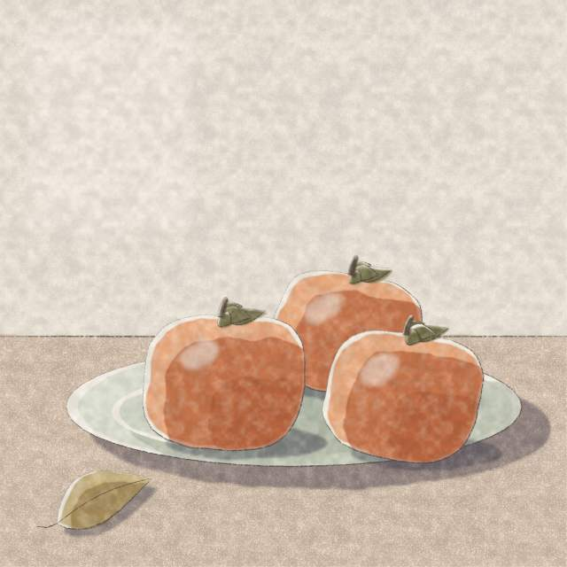
연필 · 펜 · 마른 재료 ·
watercolour연필 수채화Pencil & watercolour
따뜻하고 사람 냄새 나는 그림 · 음식, 식물, 물건 · 웃는 브랜드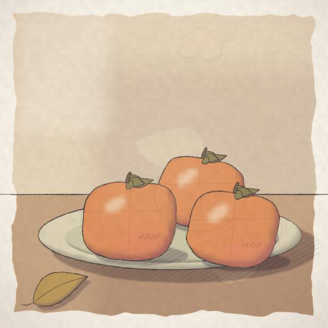
연필 · 펜 · 마른 재료 ·
storybook그림책 연필 수채Storybook pencil + watercolour
그림책 · 캐릭터와 다정한 장면 · 아이와 가족 · 따뜻한 이야기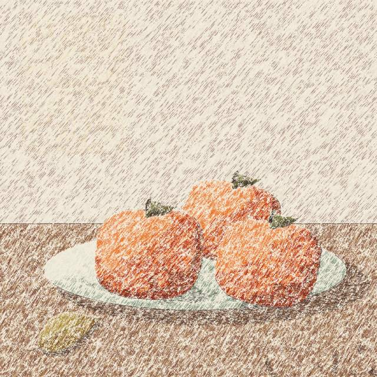
연필 · 펜 · 마른 재료 ·
coloured-pencil색연필Coloured pencil
그림책 · 아이와 집 · 손으로 만든 다정한 설명 · 따뜻한 물건 그림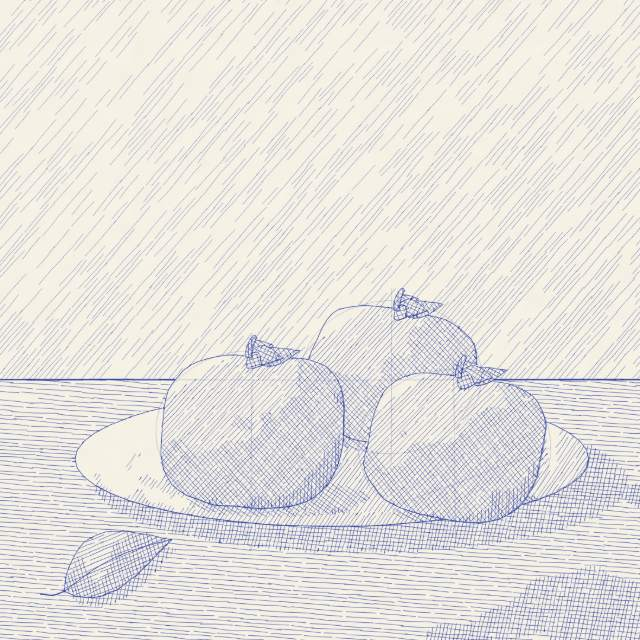
연필 · 펜 · 마른 재료 ·
ballpoint볼펜 스케치Ballpoint sketch
진지한 주제 · 리포트, 에세이 · 설명 스케치 · 물건의 구조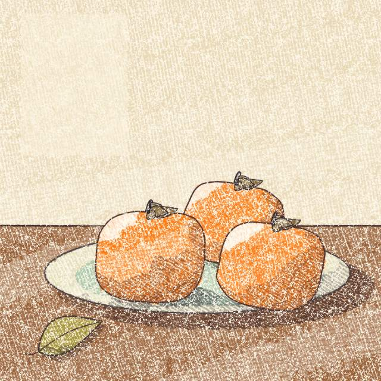
연필 · 펜 · 마른 재료 ·
crayon크레용Wax crayon
아이 같은 따뜻함 · 동화, 교육 · 웃는 브랜드 · 단순한 사물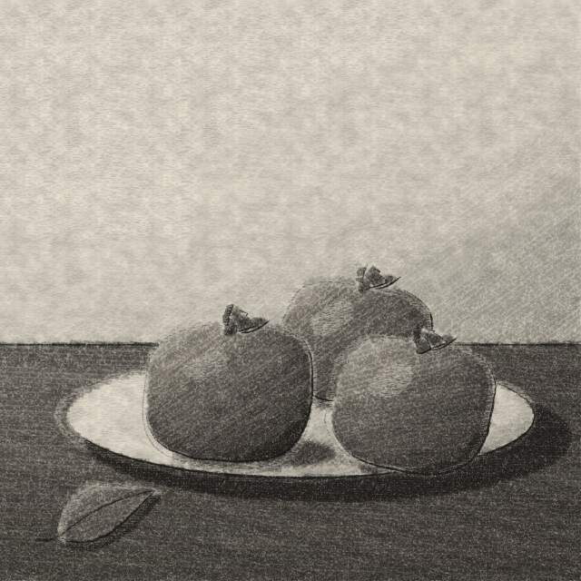
연필 · 펜 · 마른 재료 ·
charcoal목탄 · 지우고 다시 그리기Charcoal, erased and redrawn
진지하고 묵직한 그림 · 인물, 정물, 풍경 · 과정과 시간이 남는 그림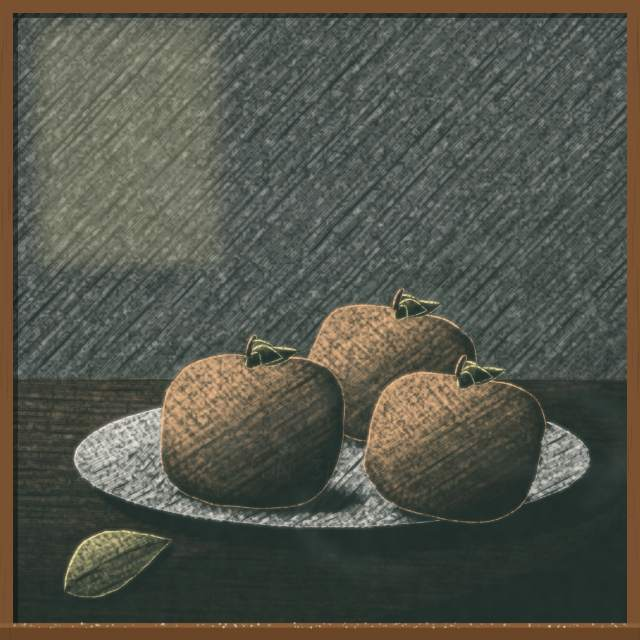
연필 · 펜 · 마른 재료 ·
chalkboard칠판 분필Chalkboard
설명하고 가르치는 그림 · 원리, 과정, 수업 · 밤 장면, 빛나는 것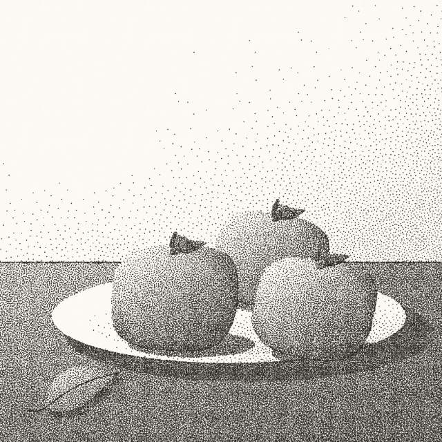
연필 · 펜 · 마른 재료 ·
stipple펜 점묘Pen-and-ink stipple
정밀하고 차분한 그림 · 표본, 도감, 사물 · 과학 일러스트잉크 · 붓 6가지
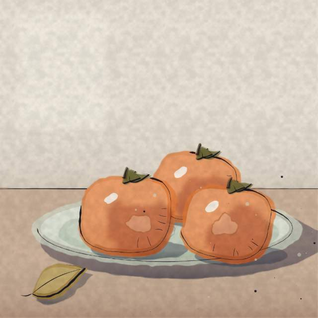
잉크 · 붓 ·
line-wash펜 담채 (잉크 라인 워시)Ink & line-wash
여행 스케치 · 어반 스케치 · 가볍고 경쾌한 일러스트 · 새, 식물, 거리 풍경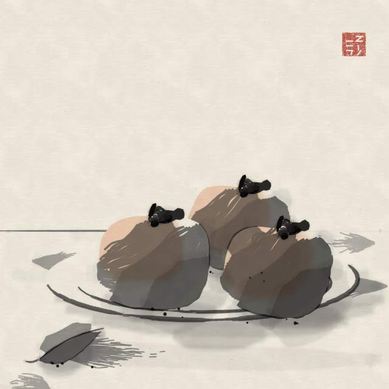
잉크 · 붓 ·
sumi-e수묵화Sumi-e ink painting
여백이 있는 그림 · 정물, 식물, 새, 산수 · 동양적이고 고요한 분위기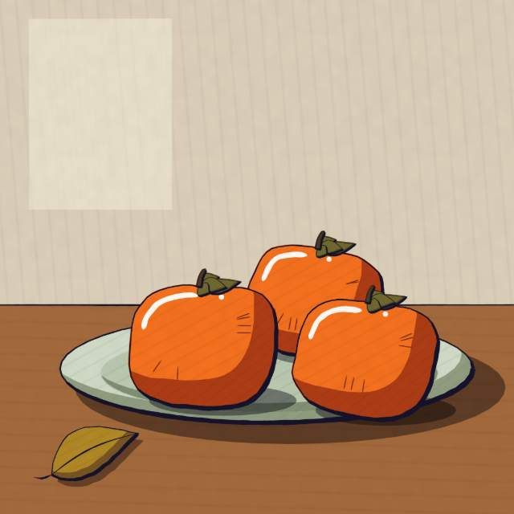
잉크 · 붓 ·
marker-comic마커 코믹Marker comic
만화 · 웹툰 컷 · 캐릭터, 음식, 제품 · 경쾌하고 또렷한 홍보 그림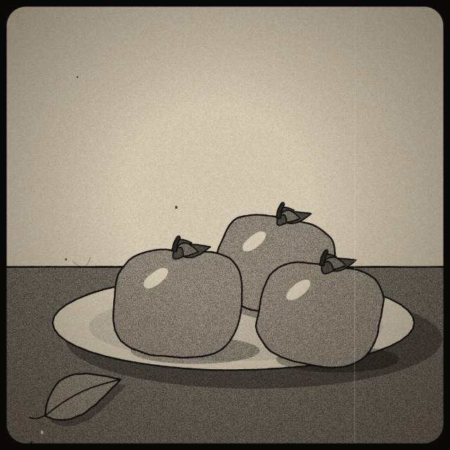
잉크 · 붓 ·
rubber-hose1930년대 고무호스 만화Rubber hose
복고풍 만화 · 흑백 무성영화 느낌 · 익살스러운 캐릭터, 물건이 춤추는 장면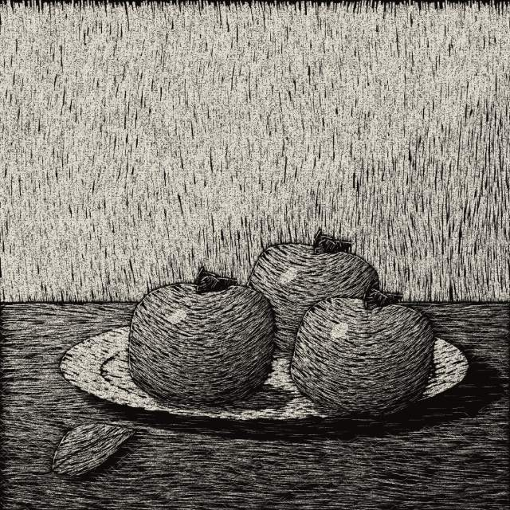
잉크 · 붓 ·
scratchboard스크래치보드Scratchboard
극적인 밤 장면 · 동물 털, 나무결, 금속 · 흑백 판화 같은 포스터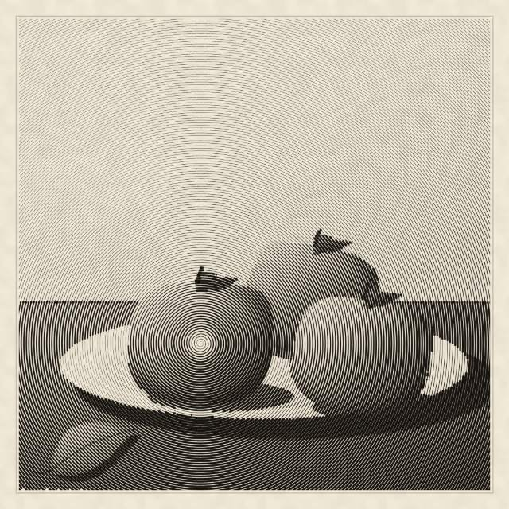
잉크 · 붓 ·
engraving한 줄 동판화Single-line engraving
오래 남는 한 장 · 포스터, 표지, 초상 · 진지한 주제물감 5가지
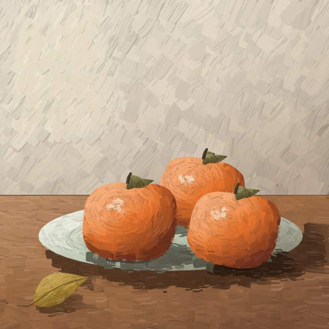
물감 ·
oil유화Oil on canvas
묵직하고 고전적인 정물 · 음식, 그릇, 초상 · 클래식한 브랜드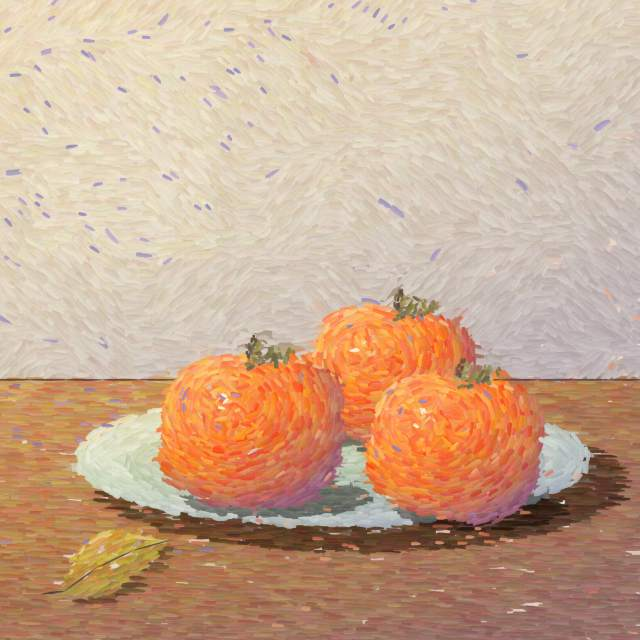
물감 ·
broken-colour인상파 브로큰 컬러Broken colour
빛과 공기가 주인공인 그림 · 풍경, 정원, 햇살 든 실내 · 밝고 경쾌한 장면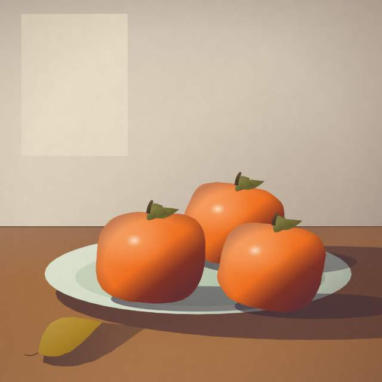
물감 ·
dream-glaze초현실 글레이즈 유화Dream glaze
초현실적이고 고요한 장면 · 이상한 물건, 꿈 같은 풍경, 커버 아트 · 사색적인 브랜드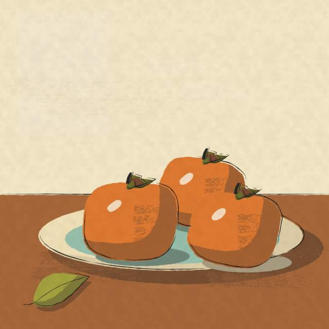
물감 ·
mid-century미드센추리 과슈Mid-century gouache
복고풍 그림책 같은 그림 · 동화, 포스터, 도시와 마을 · 따뜻하고 위트 있는 브랜드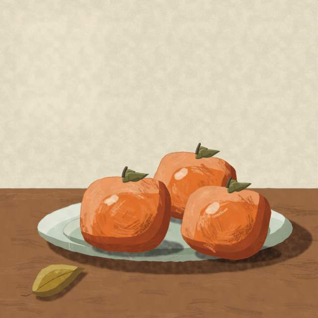
물감 ·
folk-tale옛이야기 그림책Folk-tale storybook
동화 · 옛이야기 · 마을과 들판 · 앞뒤 거리감이 있는 장면인쇄 · 판화 5가지
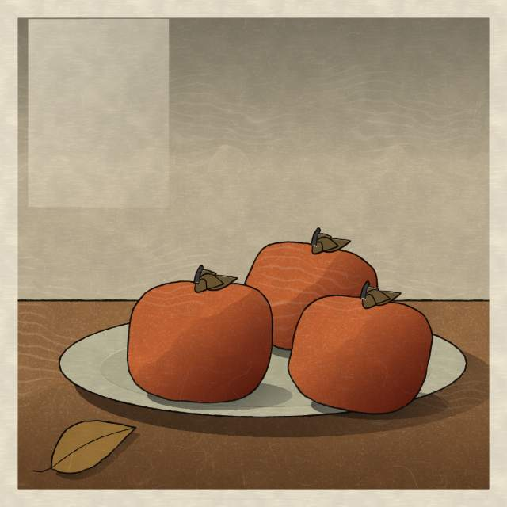
인쇄 · 판화 ·
woodblock우키요에 목판화Ukiyo-e woodblock
풍경과 정물 · 일본풍 · 평평한 색면이 시원한 포스터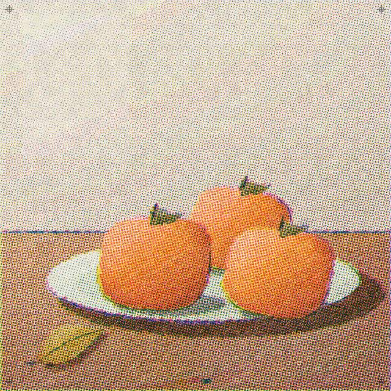
인쇄 · 판화 ·
risograph리소그래프Risograph
포스터 · 굿즈 · 잡지 표지 · 경쾌하고 큰 형태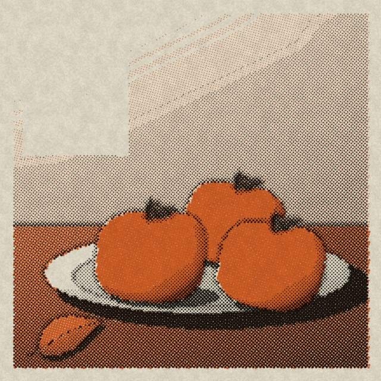
인쇄 · 판화 ·
halftone신문 망점 인쇄Newsprint halftone
레트로 신문 · 잡지 포스터 · 사진 같은 장면, 굵직한 명암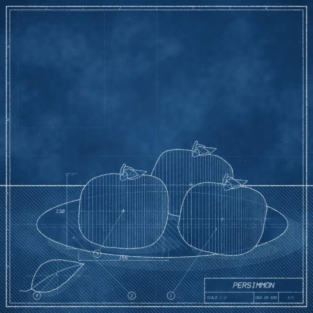
인쇄 · 판화 ·
blueprint청사진Cyanotype blueprint
기계, 건물, 가구 같은 사물 · 설계도 느낌 · 공학/제품 소개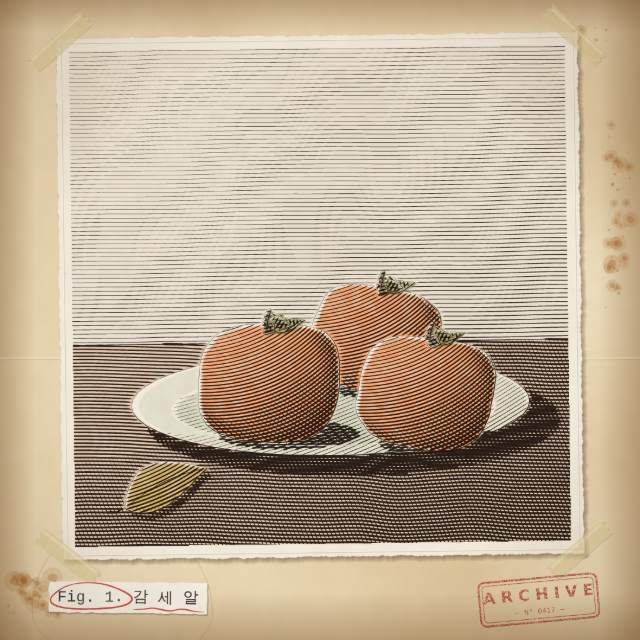
인쇄 · 판화 ·
scrapbook오래된 스크랩북Archival scrapbook
기록 · 아카이브 · 박물지 · 회상 · 설명이 붙는 그림종이 · 실 · 블록 4가지
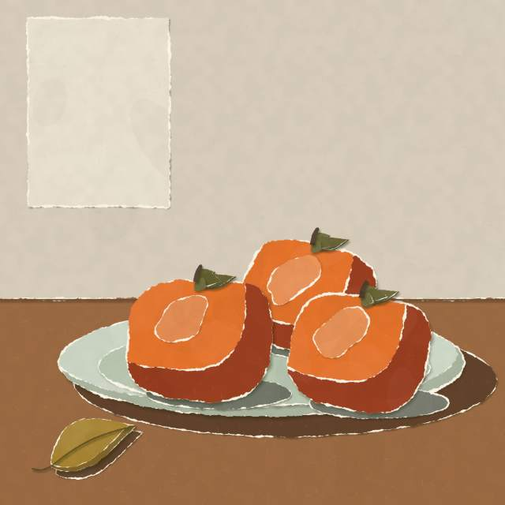
종이 · 실 · 블록 ·
cut-paper종이 콜라주Cut-paper collage
따뜻하고 손맛 나는 포스터 · 동물, 풍경, 그림책 · 표지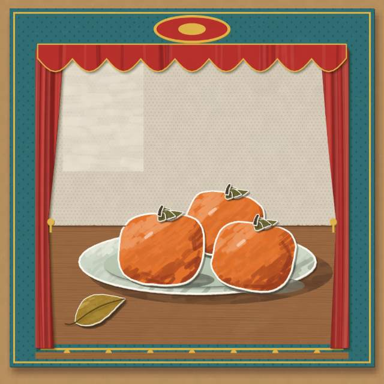
종이 · 실 · 블록 ·
toy-theatre종이 인형극 무대Toy-theatre paper collage
동화, 무대, 계절 인사 · 아기자기한 장면 · 이야기의 한 장면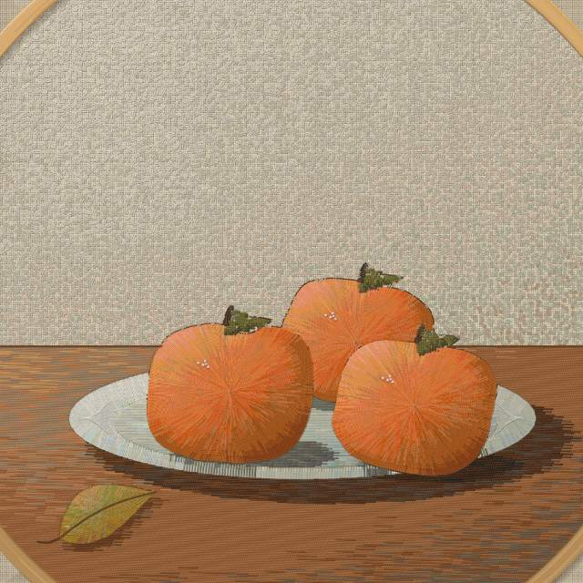
종이 · 실 · 블록 ·
embroidery자수Hand embroidery
포근하고 정성스러운 느낌 · 식물, 꽃, 소품, 동물 · 수공예 브랜드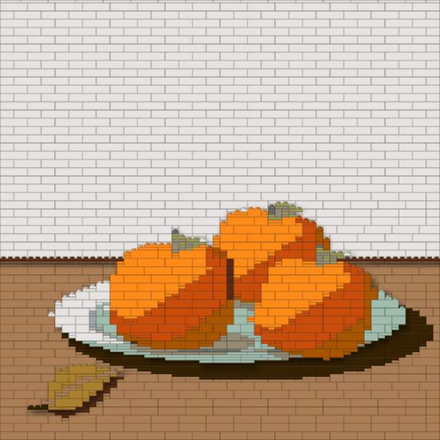
종이 · 실 · 블록 ·
toy-brick장난감 블록Toy brick mosaic
장난감처럼 귀엽고 단단한 느낌 · 아이콘, 캐릭터, 사물 · 게임과 교육디지털 · 기하 4가지
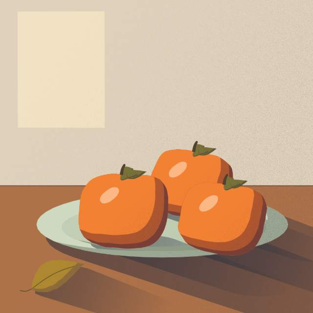
디지털 · 기하 ·
flat-vector플랫 벡터 일러스트Flat vector
깔끔한 브랜드 그림 · 앱/웹 일러스트 · 인포그래픽 · 정물과 풍경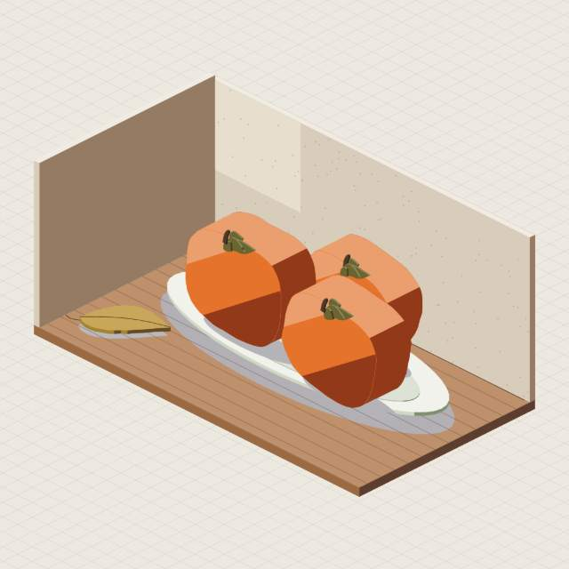
디지털 · 기하 ·
isometric아이소메트릭 컷어웨이Isometric cutaway
공간/구조 설명 · 미니어처 방/가게 · 테크/게임 일러스트 · 인포그래픽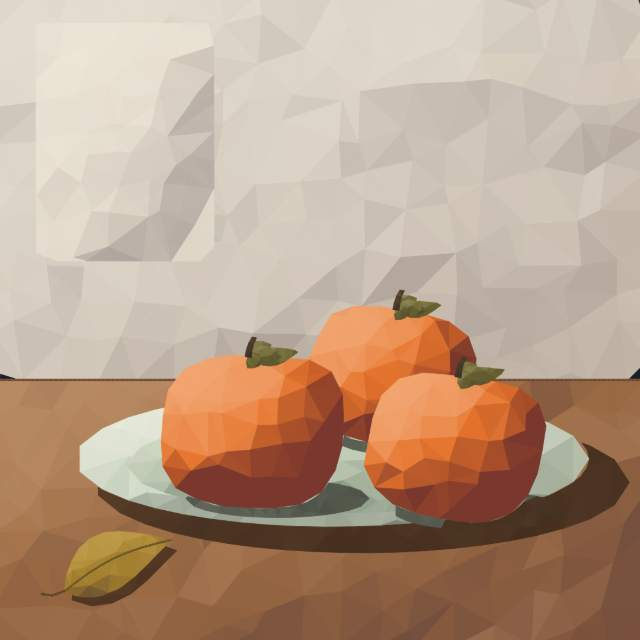
디지털 · 기하 ·
low-poly로우폴리Low-poly
게임/테크 느낌 · 풍경, 과일, 동물 · 기하학적인 포스터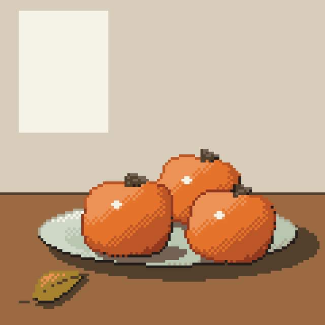
디지털 · 기하 ·
pixel-art픽셀 아트Pixel art
레트로 게임 느낌 · 아이콘/캐릭터 · 작은 장면 · 루프 애니메이션다른 주제, 같은 방식 저녁 주전자 · 4:5
브리프에서 새로 설계한 두 번째 주제입니다. 오른쪽 창에서 빛이 들고, 그림이 완성된 뒤에도 김이 계속 피어오릅니다.
실제 작품
이 스킬의 예제 두 편과, 화풍 레시피를 연구한 원본 레포입니다.
링크
- SKILL.md 워크플로
- 폴더 lib · scripts · references · examples
- README.md 빠른 시작
- references/BRIEF.md 주제 → 브리프, 화풍 고르기, 스틸 검토 기준
- references/STYLES.md 32가지 화풍의 재료 · 마크 · 순서 · 설정
- references/STYLE-API.md 장면 · 그리기 표면 · 키트 · 화풍 계약
- references/LESSONS.md 겪은 문제와 해결